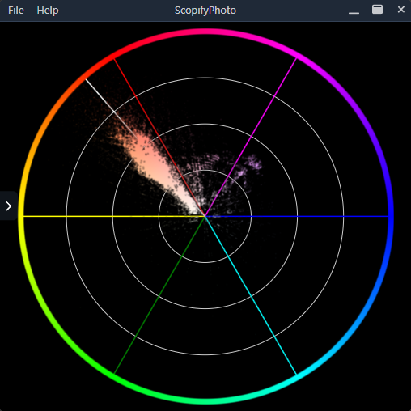
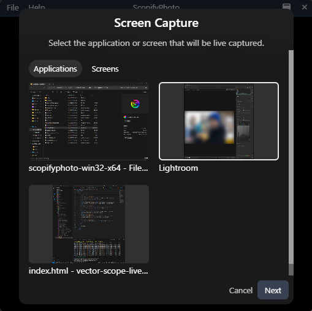
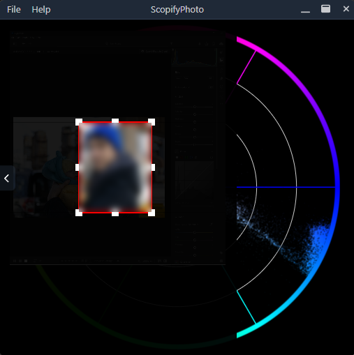

ScopifyPhoto
Bringing video editing techniques to photo analysis and editing.
Download
View on GitHub
Features
Live Screen/App Capture:
Capture any part of your screen or specific application window for real-time processing.
HSV Conversion:
Convert captured colors into HSV for better color accuracy and visual feedback.
Vectorscope Display:
Visualize the color data through a vectorscope, which can assist with tasks like skin tone adjustments.
Always on Top:
Keep the vectorscope window always visible, so you can monitor your color work while editing.
Live Updates:
The vectorscope updates in real time, reflecting changes as you adjust your colors.
More Features to Come:
More scopes & diagrams like waveform, different color spaces and so on to be developed.
Open to Collaboration:
This is a work in progress, and contributions from the open-source community are welcomed.
Preview


